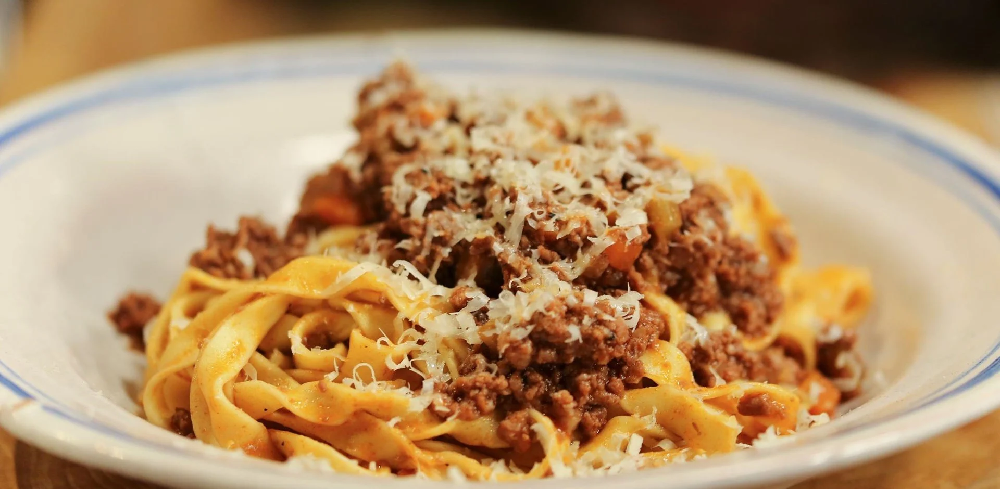

Spaghetti Bolognese

Description
Bolognese or more traditionally ragu is a classic pasta sauce from
the region of Emilia-Romagna. In this recipe we follow the
correct way of doing it, which means we are going
to use minimal ingredients (no mashed tomatoes!).
Size: 4 serving
Ingredients:
- 45 ml extra virgin olive oil
- 25g butter
- 1 x onion, finely chopped
- 1 x celery stalk, finely chopped
- 1x carrot, finely chopped
- 150g pancetta, cubed
- 200g minced beef
- 200g minced pork
- 200 ml red wine
- 2x tbsp tomato puree
- 200 ml stock (pref. chicken)
- 400g tagliatelle or high quality spaghetti
Method
- Heat the olive oil and butter in the pan, add
onion, celery, carrot and pancetta. Sweat on low heat until
onion is softened and pancetta rendered some of it's fat.
- Add meat and cook on high heat. Try to separete the meat into
small pieces with a wooden spoon. Continue until nicely browned,
you should see fond on the bottom of your pan.
-
Add wine and stir everything. After the alcohol evaporated reduce
heat to lowest possible setting and add tomato puree and stock. Stir
everything again.
- Cover with a lid and cook on low heat for 2 to 3 hours checking
every once and again to see if there is enough liquid. If not
just add more stock or water.
-
Before serving transfer (cooked) tagliatelle
to the pan with sauce and stir it nicely. If the sauce is too dry
add the water in which the pasta was cooked.